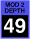

AMPLIFIER mod depth
These adjust the amount of envelope (or “fixed”) signal that goes into each amplifier. These two sources are added together, then multiplied by the post mod input.
Toolkit
These are contained in the Amplifier mod clusters within the Amplifier section.
Chroma panel
These are contained in the VOLUME section of the right panel, under the following parameter numbers:
| mod 1 | mod 2 | |
|  |
They appear in the display as Amp Mod1/2 Depth.
MIDI
These are accessed via the following NRPNs:
| mod 1 | mod 2 | ||
| A | 1,71 | 1,73 | |
| B | 2,71 | 2,73 |
Values
| MIDI | display | ||
| 0 | off | (mod 1 significant, mod 2 default) | |
| • • • |
• • • |
||
| 90 | 0db | (mod 1 default, mod 2 significant) | |
| • • • |
• • • |
||
| 127 | +6db |